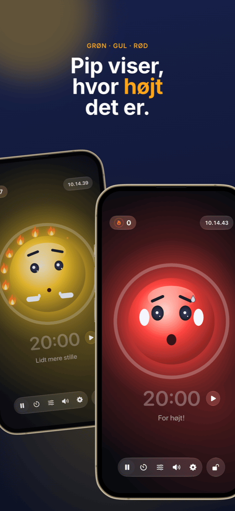

Klasseledelse: bordplan, grupper og støj under kontrol
God klasseledelse lægger man knap mærke til, og det er netop meningen: timen glider, overgangene fungerer, og tiden går til læring i stedet for formaninger. Tre spørgsmål dukker op i næsten hver time: Hvem sidder hvor? Hvem arbejder med hvem? Og hvor højt må der være lige nu? Denne guide viser en arbejdsgang, der besvarer alle tre, før de bliver et problem.
Hvad klasseledelse egentlig handler om
Klasseledelse er mere end disciplin. Allerede i 1970’erne viste den amerikanske psykolog Jacob Kounin, at dygtige lærere ikke så meget adskiller sig ved, hvordan de reagerer på uro, men ved hvor godt de forebygger den. Til hans kendetegn hører:
- Overblik: klassen kan mærke, at du har hele lokalet i syne.
- Glidende overgange og tempo: skift mellem faser koster ikke minutter, og timen mister ikke farten.
- Aktivering af gruppen: alle forbliver involveret, ikke kun den, der er i gang.
Meget af det er holdning og erfaring. Men en del er ganske enkelt organisering, og den kan forberedes. Det er her, den følgende arbejdsgang kommer ind.
Trin 1 · Én gang på forhåndOpret klasselisten én gang, og brug den overalt
Den største tidsrøver er dobbeltarbejde. Eksportér klasselisten én gang som CSV fra Excel, Numbers eller Google Sheets. Både Platzwahl og Team Zufall importerer filen direkte, og hele klassen er oprettet på få sekunder. Begge apps gemmer kun navnene lokalt på enheden, uden konto og uden cloud. Med elevdata er det ikke en detalje, men en forudsætning.
Trin 2 · FundamentetBordplanen: forebyg uro, før den opstår
Bordplanen er det mest virkningsfulde redskab i klasseledelse, fordi den virker hvert minut, uden at du behøver sige noget. Hvem der sidder ved siden af hvem, afgør snak, distraktion og koncentration. Det har vist sig at virke:
- Adskil urolige elever, ikke kun side om side, men også forfra og bagfra.
- Brug nærhed: elever, der har brug for støtte eller let falder hen, sidder i dit direkte synsfelt.
- Fordel rolige ankre mellem de mere livlige elever.
- Skift jævnligt, fx efter ferien eller hver måned, så der ikke opstår faste urohjørner.
I Platzwahl sætter du disse regler for hver elev (uro, plads forrest, ønskede naboer, adskillelser) og lader bordplanen beregne automatisk. En score viser, hvor godt alle regler er opfyldt. Den færdige plan lander på katederet som PDF.
 Trin 3 · Samarbejdsfaser
Trin 3 · Samarbejdsfaser
Retfærdige grupper uden diskussion
»Må vi selv vælge?« er spørgsmålet, der får mange gruppearbejder til at gå tabt, før de begynder. Frit valg tager tid, cementerer klikerne og efterlader altid de samme. Målrettet inddeling er retfærdig, men besværlig, og næppe umagen værd til ti minutters makkerarbejde.
Til de mange korte faser er tilfældighed den bedste løsning: Det går hurtigt, ingen føler sig forfordelt, og klassen lærer at arbejde sammen med alle. Det vigtige er, at lodtrækningen er synlig. Når klassen ser navnene blive blandet på projektoren, er der intet at diskutere.
I Team Zufall vælger du antallet af hold, fravælger fraværende med et tryk og trækker lod. Holdene kan vises stort på væggen eller eksporteres som PDF. Til længere projekter, hvor bestemte kombinationer skal undgås, er målrettet inddeling stadig det bedste valg.
 Trin 4 · Arbejdsfase
Trin 4 · Arbejdsfase
Gør støjen synlig i stedet for at tysse hele tiden
Gruppearbejde larmer, og det er helt i orden. Det bliver et problem, når ingen ved, hvor højt der er for højt, og du bruger timen på at sige »Shh!«. Formaninger slides hurtigt op og afbryder netop dem, der er koncentrerede.
Tre ting virker bedre:
- Aftal lydniveauet: fastlæg med klassen, hvad der gælder i hvilken fase. Hvisken ved selvstændigt arbejde, makkerstemme ved gruppearbejde.
- Vis lydniveauet: et støjlys på projektoren giver klassen den feedback, du ellers skulle give højt.
- Beløn ro i stedet for at straffe larm: hvis lyset kun bliver rødt og tager noget fra klassen, bliver det hurtigt et pressionsmiddel, og enkelte højlydte elever bliver klassens syndebuk. Et fælles mål, som klassen kan nå, virker bedre.
Det er præcis det, Ruhe er lavet til: En maskot viser grøn, gul eller rød, og så længe der er roligt, tændes den ene flamme efter den anden. Tolv flammer giver en fuld krans, og det bliver fejret. Grænserne for gul og rød indstiller du efter fasen, eller du lader Ruhe kalibrere sig selv. En timer viser den resterende tid, projektorvisningen sætter det hele stort op på væggen, og betjeningen bliver på din iPad. Ruhe måler kun lydniveauet; intet bliver optaget.

Trin 5 · AfrundingGør succeser synlige
Ved timens slutning tæller det, der lykkedes. En fuld flammekrans er en god anledning til en kort ros til hele klassen. Og hvis det ikke lykkedes i dag, er det en mulighed for sammen at finde ud af hvorfor, uden at lede efter syndere. Tilbagevendende problemer ved bestemte borde er et tegn på, at den næste bordplan er på vej.
Sådan ser en time med denne arbejdsgang ud
| Fase | Hvad sker der | Værktøj |
|---|---|---|
| Før timen | Bordplanen ligger fremme, alle ved, hvor de skal sidde. Ingen kamp om pladserne. | Platzwahl |
| Start | Fælles fase i den faste bordopstilling. | – |
| Overgang | Holdene trækkes på projektoren, fraværende er fravalgt. | Team Zufall |
| Arbejdsfase | Støjlys og timer kører på projektoren, klassen samler flammer. | Ruhe |
| Opsamling | Tilbage til de faste pladser, et hurtigt blik på flammekransen. | Ruhe |
Ofte stillede spørgsmål
Hvad betyder klasseledelse?
Klasseledelse omfatter alt, hvad en lærer gør, for at så meget af undervisningstiden som muligt faktisk er læringstid: regler og rutiner, indretning og bordplan, glidende overgange og overblik over hele klassen. Det handler mindre om at reagere på uro end om at forhindre, at den opstår.
Hvad hjælper, når klassen konstant larmer for meget?
Aftal først med klassen, hvilket lydniveau der er tilladt i hvilken fase. Gør derefter lydniveauet synligt i stedet for at formane hele tiden, fx med et støjlys på projektoren. Mest virkningsfuldt er det at anerkende rolige faser frem for kun at straffe larm.
Giver et støjlys i undervisningen mening?
Ja, når det bruges som et fælles mål og ikke som et straffeværktøj. Grænserne skal passe til fasen: Gruppearbejde må være mere larmende end selvstændigt arbejde. Et støjlys, der belønner ro i stedet for at straffe larm, forhindrer, at enkelte højlydte elever bliver klassens syndebuk.
Skal grupper inddeles tilfældigt eller målrettet?
Begge dele har sin plads. Til korte, hyppige faser i par eller grupper er tilfældighed ideel: hurtig, retfærdig og uden diskussion om, hvem der skal arbejde med hvem. Til længere projekter eller vanskelige konstellationer kan målrettet inddeling betale sig. Selve bordplanen bør derimod altid planlægges bevidst.